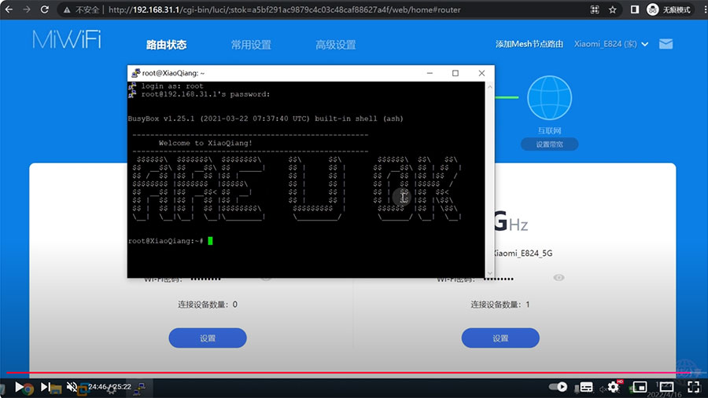

本教程解锁 AX6000 SSH 不需要借助其它软路由，教程有点长，请大家仔细看视程
小米路由器AX6000解锁SSH：https://github.com/kjfx/AX6000/
步骤：
工具下载，点击下载>>
第一步，设置 移动热点
网络名称改成：OpenWrt，密码：12345678 ，频带：2.4GHz
查看WiFi信道（通常为1），可通过另外的电脑或手机APP连接这个WiFi查看信道。
第二步，AX6000刷固件，降级
第三步，安装VMware虚拟机，并安装OpenWrt
OpenWrt 地址：192.168.5.1 用户名：root 密码：password
第四步，用WinSCP上传“xqsystem.lua”到OpenWrt的目录：/usr/lib/lua/luci/controller/admin/
第五步，将OpenWrt LAN口 IPv4 改为：169.254.31.1
第六步，开启 移动热点 ，并设置热点网络连接，去掉 Internet 协议版本 IPv4
第七步，编辑虚拟机的桥接网络
编辑 > 虚拟网络编辑器 > 更改设置
第八步，登录小米AX6000
http://192.168.31.1/cgi-bin/luci/;stok=XXXXXX/api/xqsystem/extendwifi_connect_inited_router?ssid=OpenWrt&password=12345678&encryption=WPA2PSKenctype=CCMP&channel=1&band=2g&admin_username=root&admin_password=admin&admin_nonce=xxx
第九步，通过SN获取默认root账号的密码（SN码在路由器底部或192.168.31.1 能查看到）
https://miwifi.dev/ssh
